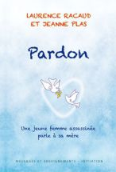
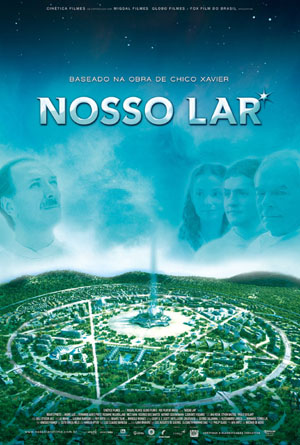

Le voyage de l'Âme
Changement de paradigme concernant la mort - Photo d'une Âme quittant son corps et d'une Âme en coquille astrale - Processus de désincarnation et d'incarnation (ma grossesse avec l’Âme de ma fille) - La mort est un passage de conscience (voyage astral aux portes du tunnel) - Retrouvailles avec la famille disparue - Nombreux témoignages de contacts et expériences
Anecdotes personnelles et Photos Hors du commun
Changement de paradigme au sujet de la mort
Lors de cette conférence, je témoignerai de mes propres expériences de visions et contacts depuis plus de 20 ans avec le monde parallèle des disparus mais aussi avec différents plans vibratoires et répondrais à vos questions concernant les sujets suivants :
-
Processus d'incarnation : Contact avec l'Âme de ma fille durant ma grossesse
-
Visite de différentes strates du monde de l'astral et nombreuses expériences à partager : retrouvaille familiale, manifestations diverses de personnes décédées, expérience personnelle aux portes de la mort...
-
Voyage astral aux portes du tunnel
-
Je vous montrerai des photos d’Âmes en décorporation prises par des scientifiques ainsi que la photo d'une Âme en coquille astrale qui s'est présenté à une amie en 2017.
mais aussi les sujets plus classiques :
- Comment se produit le phénomène de désincarnation ? Le tunnel de la mort, la lumière brillante, la coquille astrale, les sphères de repos.
- Le monde des suicidés
- Le sens d'un "aller/retour" : décès d'un nouveau né
- Qu'en est il du processus de ré incarnation ?
- Les dangers de la communication avec les esprits
- Les retrouvailles d’Âme. "J 'ai vu mon père (ou ma mère) venir me chercher !" disent parfois les personnes âgées à l'aube de leur départ.
- La conscience quitte le corps physique et poursuit son évolution...
J’aborderai également un sujet plus actualisé : UN CHANGEMENT DE PARADIGME CONCERNANT LA MORT. Aujourd’hui les médecins et physiciens quantiques américains et russes démontrent que la conscience est délocalisée du corps physique. Le scientifique et le mystique se rejoignent ... Enfin ! ! !
Depuis un an environ, je reçois un nombre croissant d'appels de la part de personnes dites "ordinaires" qui ont des flashs,voire des contacts avec leurs disparus et sont apeurés ( au point d'avoir créé un espace d’écoute gratuit ). Pourquoi ? Que se passe t-il ? Nous verrons pourquoi ce phénomène.
> Pour plus d’informations sur ces sujets, écoutez l’enregistrement de la webradio BOB VOUS DIT TOUTE LA VERITE
"La vie est en quelque sorte un pèlerinage" / "La vie est un court exil" - Platon
"La vie est un départ, la mort est un retour" Lao Tseu - 500 ans av. J.C

Témoignage concret :
Canalisation de messages de Laurence, fille de Jeanne Racaud assassinée à Paris en 2002 à l'âge de 32 ans par un jeune informaticien. Jeanne a pardonné et témoigne de la paix et de la joie de vivre dans de nombreuses associations. > Voir le site de Jeanne Racaud
Date et lieu : Voir le calendrier des activités
Sous forme de conférences ou à la demande de nombreuses associations d'éveil
- PARIS : "Le Bâton de Parole" - Clichy 2013 / 2014 - Ass. " Les Anges Spirituels" 25/08/2013 et 01/03/2015
- TARN : Fiac 2013 - Lisle sur Tarn 2015
- NÎMES : 2013 et 2014
- DORDOGNE : Plazac depuis 2014 - Périgueux 2017
- RENNES : Depuis 2014 et Ass." Cœur de cristal" 11/2019
- POITIERS : Ass. "Liens de Lumière" 05/2019

Certains films nous connectent à ce monde que l'on juge effrayant dans notre culture occidentale, mais qui correspond pourtant bien à une réalité profonde (des films tels que "Ghost", "Au delà de nos rêves"... ). Le film brésilien NOSSO LAR (que je vous recommande vivement de regarder avant la conférence) est un véritable chef d’œuvre car il montre divers plans vibratoires avec une dextérité déconcertante. Je proposerai une lecture des codages utilisés dans ce film pour ceux qui l'auront vu précédemment.
Film réalisé d'après le livre dicté par écriture automatique par l'esprit du Docteur André Luiz au médium spirite brésilien Chico Xavier, personnage reconnu par le gouvernement brésilien comme ayant apporté une grande ouverture spirituelle au sein du pays. Ce film a eu un auditoire supérieur au film Avatar. André Luiz raconte sa vie dans l'au-delà depuis sa mort et décrit la cité dans laquelle il est recueilli ainsi que sa nouvelle vie.
Je vous recommande vivement de voir ce film avant cette conférence. Vous pouvez le commander sur le site jupiter-films.com.
N.B. : Possibilité de venir dans votre région (pour des groupes constitués de 10 personnes minimum)